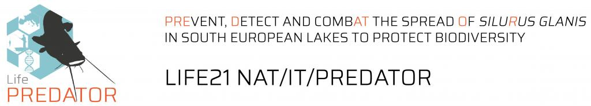
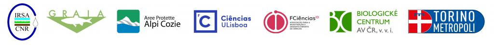
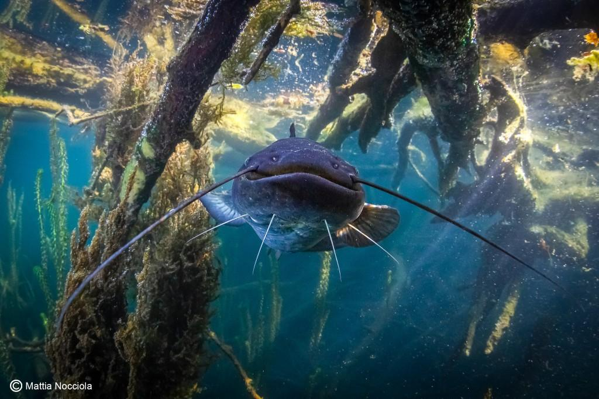
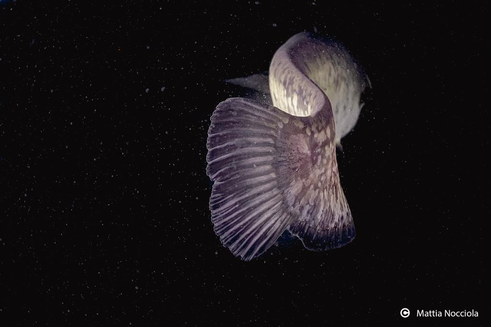

Attività · Programmi LIFE e ricerca europea
Progetto LIFE PREDATOR
Titolo del progetto: PREvent, Detect and combAT the spread Of SiluRus glanis in south european lakes to protect biodiversity
Acronimo: LIFE21-NAT-IT-PREDATOR
Codice progetto: 101074458
Programma: LIFE – Subprogramma Nature and Biodiversity (LIFE-2021-SAP-NAT)
Durata: 60 mesi (1 settembre 2022 – 31 agosto 2027)
Paesi coinvolti: Italia e Portogallo, Paesi del Sud Europa dove il siluro è specie aliena invasiva da contenere, e Repubblica Ceca, Paese nel quale invece il siluro è autoctono, e dal quale attingere conoscenze utili sulla sua ecologia.
Coordinatore: IRSA-CNR (Istituto di Ricerca sulle Acque – Consiglio Nazionale delle Ricerche)
Partner: GRAIA Srl, ALCO (Ente di gestione Aree Protette Alpi Cozie), CIENCIAS (Faculdade de Ciencias da Universidade de Lisboa), FC.ID (Fundação da Faculdade de Ciencias da Universidade de Lisboa para a Investigação e o Desenvolvimento), BCCAS (Biologické Centrum Akademie Věd České Republiky), CMTO (Città Metropolitana di Torino)
Cofinanziatori e sostenitori: Numerose istituzioni pubbliche e private hanno fornito lettere di supporto e si sono impegnate a cofinanziare o sostenere le attività progettuali, tra cui enti gestori di siti Natura 2000, autorità regionali e municipali, associazioni di pesca, cooperative sociali, enti di ricerca e agenzie ambientali. Questi stakeholder hanno un ruolo strategico nella replicabilità e sostenibilità delle azioni.
Stakeholder: I soggetti portatori di interesse sono stati mappati e coinvolti sin dall’inizio tramite interviste, incontri e tavoli di confronto. Sono stati creati gruppi locali di alleanza (Local Alliance Groups) che accompagnano le fasi progettuali e contribuiscono a co-progettare soluzioni di controllo del siluro. In totale si prevede il coinvolgimento attivo di almeno 230 pescatori professionisti, 100 pescatori sportivi, 300 cittadini coinvolti nel monitoraggio e almeno 15 autorità di gestione nella replicazione dei protocolli.
Descrizione sintetica del progetto: LIFE PREDATOR affronta il problema dell’invasione del siluro (Silurus glanis), una delle specie aliene più impattanti nei laghi del Sud Europa, con gravi conseguenze sulla biodiversità acquatica e sugli equilibri ecologici. L’obiettivo strategico è contrastare la diffusione e le nuove introduzioni della specie attraverso un approccio integrato, innovativo e replicabile, in linea con il Regolamento UE 1143/2014.
Il progetto sviluppa un sistema di rilevamento precoce del siluro tramite DNA ambientale (eDNA) integrato con la Citizen science in 50 laghi (23 in Italia, 25 in Portogallo e 2 in Repubblica Ceca). In 10 laghi selezionati, dove la specie è già diffusa, si testano e applicano metodi di cattura selettivi per ridurne la biomassa del 90% (nei laghi piccoli e isolati), e almeno del 10-50% nei grandi laghi e invasi. Il progetto prevede campagne di sensibilizzazione mirate ai pescatori (almeno 400.000 contatti previsti) e alla cittadinanza (1 milione di persone raggiunte), inclusi 12.000 studenti.
Un elemento distintivo è la valorizzazione della biomassa rimossa attraverso modelli di economia circolare e solidale: il siluro sarà trasformato in pasti distribuiti a persone in difficoltà economica da parte di cooperative sociali. Inoltre, i risultati del progetto verranno trasferiti a 15 autorità di gestione per l’integrazione nei piani di conservazione dei siti Natura 2000, e si istituirà un gruppo di coordinamento sovranazionale (SEMG) per la gestione del siluro nel Sud Europa.
Il progetto è organizzato in Work Package, ovvero in “pacchetti di lavoro”:
WP1: Coordinamento e gestione. Il WP1 ha un ruolo cruciale nell’avvio, nell’organizzazione e nel monitoraggio dell’intero progetto LIFE PREDATOR. È dedicato alla gestione amministrativa, finanziaria e strategica, e garantisce che tutte le attività siano realizzate in modo coerente, puntuale e in linea con gli obiettivi previsti.
WP2: Analisi ecologica e sociale dei siti, formazione gruppi operativi. Il WP2 rappresenta la base conoscitiva su cui si fondano tutte le successive azioni del progetto. È focalizzato sull’analisi ecologica dei siti e sulla comprensione del contesto sociale in cui si opera. Viene svolta un’analisi dettagliata degli stakeholder locali (pescatori professionisti e ricreativi, autorità locali, associazioni, cooperative), per valutarne atteggiamenti, conoscenze e disponibilità al coinvolgimento. Sulla base di queste informazioni vengono costituiti tre gruppi chiave: i team operativi (OT), i team di allerta (WT) e i team di valorizzazione (ET), ciascuno con compiti specifici nei WP successivi.
WP3: Sviluppo di protocolli di cattura. Il WP3 ha lo scopo di individuare e validare le tecniche più efficaci e selettive per la cattura del siluro nei laghi del Sud Europa. A partire dall’analisi delle informazioni raccolte in WP2, si sperimentano metodologie differenziate in base alla tipologia e alla morfologia degli ambienti acquatici, tenendo conto delle esperienze già maturate nei paesi partecipanti, in particolare in Repubblica Ceca dove il siluro è specie nativa e oggetto di monitoraggio. Le tecniche testate comprendono l’uso di palamiti, reti trappola, pesca elettrica, in condizioni controllate e in habitat ad alta probabilità di presenza del siluro. I risultati ottenuti permetteranno di elaborare protocolli standardizzati per ogni contesto ecologico e operativo, fondamentali per le successive campagne di rimozione (WP5).
WP4: Sistema di rilevamento precoce con eDNA e Citizen science. Il WP4 è dedicato allo sviluppo di un sistema di allerta precoce per individuare la presenza del siluro prima che la specie si stabilisca nei laghi ancora indenni. Il fulcro dell’approccio è l’uso innovativo del DNA ambientale (eDNA), che consente di rilevare tracce genetiche della specie nell’acqua anche a bassissime densità, integrato con osservazioni provenienti dalla Citizen science.
WP5: Campagne di cattura e controllo in laghi e invasi selezionati. Il WP5 mette in pratica le strategie di contenimento del siluro nei bacini in cui la specie è già presente e in espansione. Sulla base dei protocolli elaborati nel WP3, si realizzano campagne di cattura mirate con l’obiettivo di ridurre significativamente la biomassa del siluro, migliorando la qualità ecologica degli ecosistemi acquatici coinvolti.
WP6: Monitoraggio impatti su biodiversità, servizi ecosistemici e percezione sociale. Il WP6 valuta gli effetti delle attività di controllo del siluro sugli ecosistemi lacustri, sulla fauna ittica nativa e sull’opinione pubblica. L’obiettivo è documentare, attraverso metodi scientifici, i benefici ottenuti in termini di biodiversità e funzionalità ecologica, nonché raccogliere l’opinione della popolazione in merito alle attività di progetto.
WP7: Replicabilità, trasferimento risultati, economia circolare, gruppo SEMG. Il WP7 è focalizzato sulla capitalizzazione dei risultati ottenuti, sulla loro replicazione in altri contesti e sulla promozione di modelli di economia circolare. Le attività mirano a garantire la sostenibilità a lungo termine degli effetti del progetto e a creare sinergie a livello europeo per la gestione del siluro. I risultati saranno condivisi tramite linee guida e attività dimostrative. In parallelo, si creano strumenti per il trasferimento dei protocolli ad almeno 15 enti gestori di siti Natura 2000, e si istituisce il South European catfish Management Group (SEMG), una piattaforma transnazionale per la governance futura della specie.
WP8: Disseminazione, eventi pubblici, educazione ambientale nelle scuole. Il WP8 è dedicato alla comunicazione, sensibilizzazione e divulgazione delle attività e dei risultati del progetto. Ci si propone di informare il grande pubblico e gli stakeholder sulle problematiche legate alla diffusione del siluro, sulle azioni intraprese per contenerlo e sull’importanza della biodiversità acquatica. Le attività comprendono l’organizzazione di eventi pubblici, mostre itineranti, partecipazione a fiere di settore, produzione di materiali informativi multilingue (brochure, video, poster), pubblicazione di articoli su media locali e nazionali, e gestione dei canali digitali del progetto (sito web, social media). Una particolare attenzione è rivolta ai pescatori sportivi, destinatari di una campagna mirata per favorire il riconoscimento precoce e la segnalazione del siluro, e per promuovere comportamenti responsabili. Un’altra componente fondamentale è l’educazione ambientale nelle scuole, con lo sviluppo di percorsi didattici interattivi e visite ai laghi coinvolti nel progetto. Gli studenti saranno coinvolti in attività pratiche, come il campionamento delle acque per l’analisi dell’eDNA, contribuendo così anche al monitoraggio.



